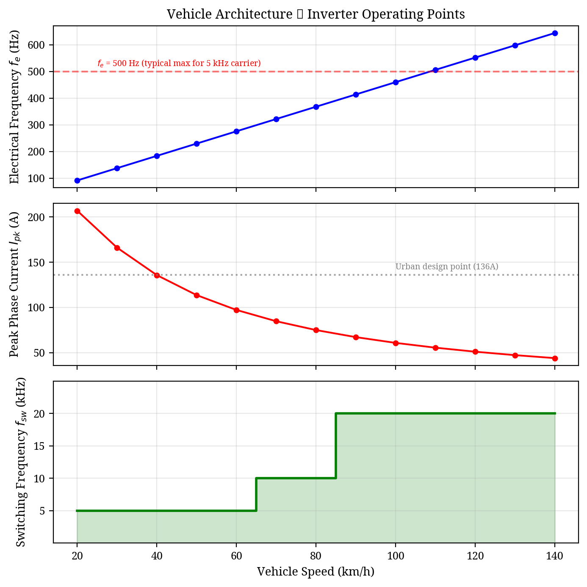
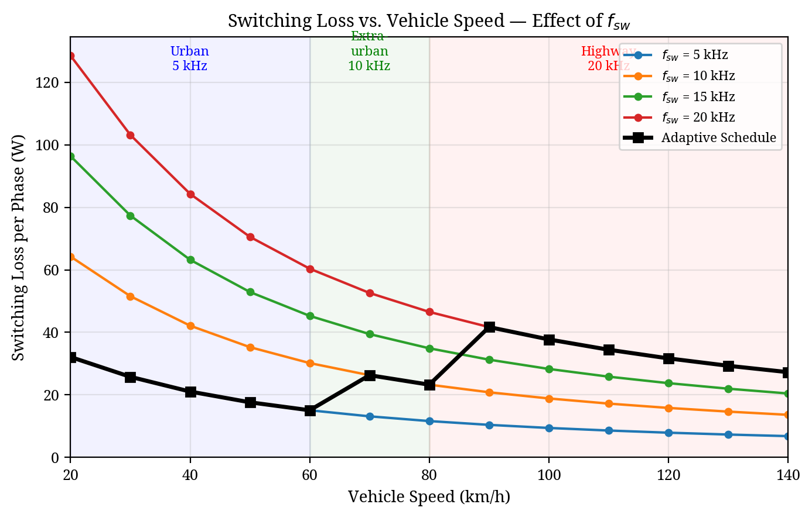
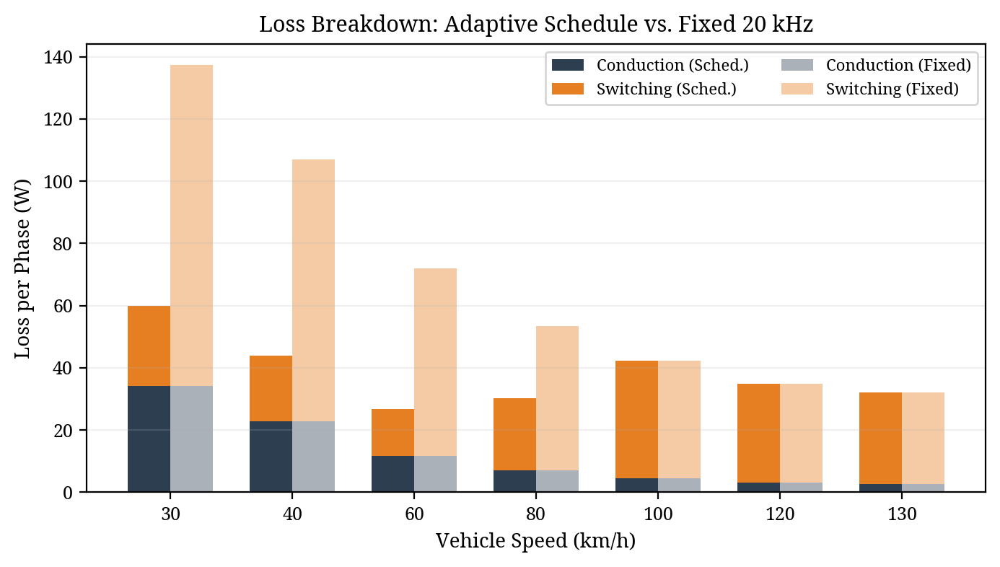

Abstract—This paper presents a vehicle architecture-driven approach to analyzing and optimizing switching losses in an 800V Electric Vehicle (EV) traction inverter. While Three-Level Flying Capacitor (3L-FC) topologies offer inherent dv/dt and harmonic benefits over two-level designs, their efficiency is highly dependent on the switching frequency schedule. By mapping vehicle speed directly to inverter electrical frequency and peak phase current through the mechanical drivetrain parameters (gear ratio, pole pairs, and tyre radius), this study establishes a comprehensive loss profile across the entire driving spectrum. Using the industry-standard Graovac-Purschel analytical method and datasheet parameters from a 1200V SiC module, the switching losses are quantified for various carrier frequencies. The results demonstrate that implementing a speed-adaptive switching frequency schedule (5 kHz for urban, 10 kHz for extra-urban, 20 kHz for highway) yields a 75% reduction in switching losses during high-current urban driving compared to a fixed 20 kHz baseline, while maintaining an acceptable frequency modulation ratio at high speeds.
The transition to 800V DC bus architectures in modern Electric Vehicles (EVs) enables faster charging and reduced cable mass, but places severe demands on the traction inverter. Traditional two-level voltage source inverters utilizing 1200V Silicon Carbide (SiC) MOSFETs suffer from high switching losses and generate extreme dv/dt transients that degrade motor insulation [1].
Multilevel topologies, specifically the Three-Level Flying Capacitor (3L-FC) inverter, mitigate these issues by halving the voltage step across the commutating switches. This inherently reduces switching energy per transition and improves the harmonic profile of the output current [2]. However, to fully exploit the efficiency potential of the 3L-FC topology, the inverter control strategy must be tightly coupled to the physical vehicle architecture and the specific driving conditions.
This paper investigates the switching loss profile of a 3L-FC inverter under varying drive frequencies. Rather than evaluating the inverter at isolated, arbitrary operating points, the electrical parameters (fundamental frequency and phase current) are derived directly from vehicle speed using the mechanical drivetrain characteristics. An analytical switching loss model based on the Graovac-Purschel method [3] is then applied to demonstrate the massive efficiency gains achievable through an adaptive, speed-dependent switching frequency schedule.
To accurately model inverter losses, the electrical operating points must be mapped from the vehicle's mechanical state. The test vehicle architecture is defined by an 800V DC bus, a single-speed reduction gear (ratio G = 8.19), a tyre radius (r) of 0.315 m, and an 8-pole Permanent Magnet Synchronous Motor (pole pairs p = 4).
The fundamental electrical frequency (fe) required by the motor is directly proportional to the vehicle speed (v, in m/s):
This linear relationship means that urban driving (e.g., 40 km/h) requires a relatively low electrical frequency of 184 Hz, while highway cruising (120 km/h) demands 552 Hz.
The inverter was modeled driving an RL load (R=1.3Ω, L=2mH) per the specific project constraints. Because the load impedance increases with frequency, the peak phase current (Ipk) is inversely proportional to vehicle speed. Consequently, urban driving represents the highest current stress (136 A at 40 km/h), while highway driving draws significantly less current (51 A at 120 km/h).
A critical constraint in inverter design is the frequency modulation ratio (mf = fsw / fe). To ensure adequate waveform quality and prevent sub-harmonic injection, mf should generally be kept above 9 [4]. Therefore, while a low switching frequency (fsw) is desirable to minimize losses during the high-current urban phase, a higher fsw is strictly required during highway driving to maintain an acceptable mf.

To quantify the efficiency impact of the drive frequency, the industry-standard analytical method proposed by Graovac and Purschel [3] was utilized. This method calculates the duty-cycle-weighted average switching loss over a fundamental cycle.
The total switching energy (Esw = Eon + Eoff) of a SiC MOSFET scales approximately linearly with commutated current and voltage. By integrating the switching energy over a sinusoidal current half-wave, the average switching power loss per phase (Psw) for a 3-level inverter can be expressed as:
Where Nc is the number of switches commutating per PWM transition (Nc = 2 for 3L-FC), Esw_ref is the datasheet reference switching energy at Iref and Vref, and Vdc_sw is the voltage blocked by the switch (Vdc/2 = 400V for an 800V 3L-FC topology).
The analytical model was calibrated using parameters from the Wolfspeed CAB450M12XM3 1200V, 450A SiC module [5]. The reference switching energies are Eon = 25.4 mJ and Eoff = 7.51 mJ at Iref = 450A and Vref = 600V. Conduction losses were modeled using a temperature-dependent Rds(on) scaling from 3.3 mΩ at 25°C to 6.6 mΩ at 175°C.
The analytical model was executed across the full vehicle speed range (20 to 140 km/h) to evaluate switching losses at different carrier frequencies (5, 10, 15, and 20 kHz).
The results, shown in Fig. 2, reveal that operating at a fixed 20 kHz carrier frequency—while necessary for high-speed highway driving—is severely sub-optimal for urban driving. At 40 km/h, the high phase current (136 A) combined with a 20 kHz switching frequency generates 84.3 W of switching loss per phase.
Because switching loss scales linearly with fsw, reducing the carrier frequency to 5 kHz during urban driving cuts the switching loss to just 21.1 W per phase. This is permissible because the fundamental frequency at 40 km/h is only 184 Hz, yielding a safe modulation ratio (mf = 27) even at 5 kHz.

Based on these findings, an adaptive switching frequency schedule was implemented: 5 kHz for urban speeds (<60 km/h), 10 kHz for extra-urban (60-80 km/h), and 20 kHz for highway speeds (>80 km/h).
| Metric | Urban (40 km/h) | Highway (120 km/h) |
|---|---|---|
| Electrical Freq (fe) | 183.9 Hz | 551.7 Hz |
| Peak Current (Ipk) | 135.8 A | 51.0 A |
| Fixed 20kHz Sw. Loss | 84.3 W/phase | 31.7 W/phase |
| Scheduled Sw. Loss | 21.1 W/phase (5kHz) | 31.7 W/phase (20kHz) |
| Conduction Loss | 22.8 W/phase | 3.2 W/phase |
As detailed in Table I and Fig. 3, the adaptive schedule yields a massive 75% reduction in switching losses during urban driving. Across all three phases, this equates to a saving of nearly 190 W at 40 km/h. During highway driving, where the current is naturally lower due to load impedance, the 20 kHz switching losses are acceptable (31.7 W/phase) and necessary to support the 552 Hz fundamental frequency.

This paper demonstrated that traction inverter design and optimization cannot be conducted in isolation from the vehicle architecture. By mapping mechanical vehicle speed to inverter electrical parameters, a comprehensive switching loss profile was generated using the Graovac-Purschel analytical method. The analysis proved that while a high switching frequency (20 kHz) is required for high-speed highway driving to maintain waveform quality, applying this fixed frequency to high-current urban driving results in severe efficiency penalties. Implementing a speed-adaptive switching frequency schedule in the 3L-FC inverter reduced urban switching losses by 75%, significantly improving the overall drivetrain efficiency where EVs spend the majority of their operational life.
[1] T. Modeer et al., "Multilevel Inverters for EV Traction Applications: A Review," IEEE Transactions on Transportation Electrification, 2020.
[2] "A Closer Look at Multilevel Traction Inverters," Charged EVs, 2023.
[3] D. Graovac and M. Purschel, "IGBT Power Losses Calculation Using the Data-Sheet Parameters," Infineon Application Note AN 2009-05, Jan. 2009.
[4] Texas Instruments, "EV Traction Inverter Design Priorities," Whitepaper SPRAD58B.
[5] Wolfspeed, "CAB450M12XM3 1200V, 450A SiC Half-Bridge Module Datasheet," Rev. 3, June 2024.